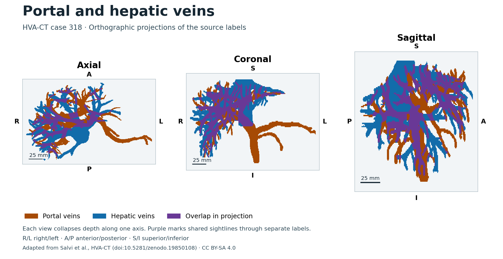

Portal and hepatic veins
Explore the two venous systems annotated in HVA-CT case 318. The models follow the source voxel boundaries. Both annotations lie within the source image bounds.
Verifying CT and label data…
Verifying source surfaces…
Vein projections in three planes

The source labels distinguish the two venous systems. The original CT and mask share the same grid. Individual branch identification is pending.
Models adapted from HVA-CT by Matteo Salvi and colleagues, case 318. CC BY-SA 4.0.
CT from Medical Segmentation Decathlon Task 08, case 318. CC BY-SA 4.0.